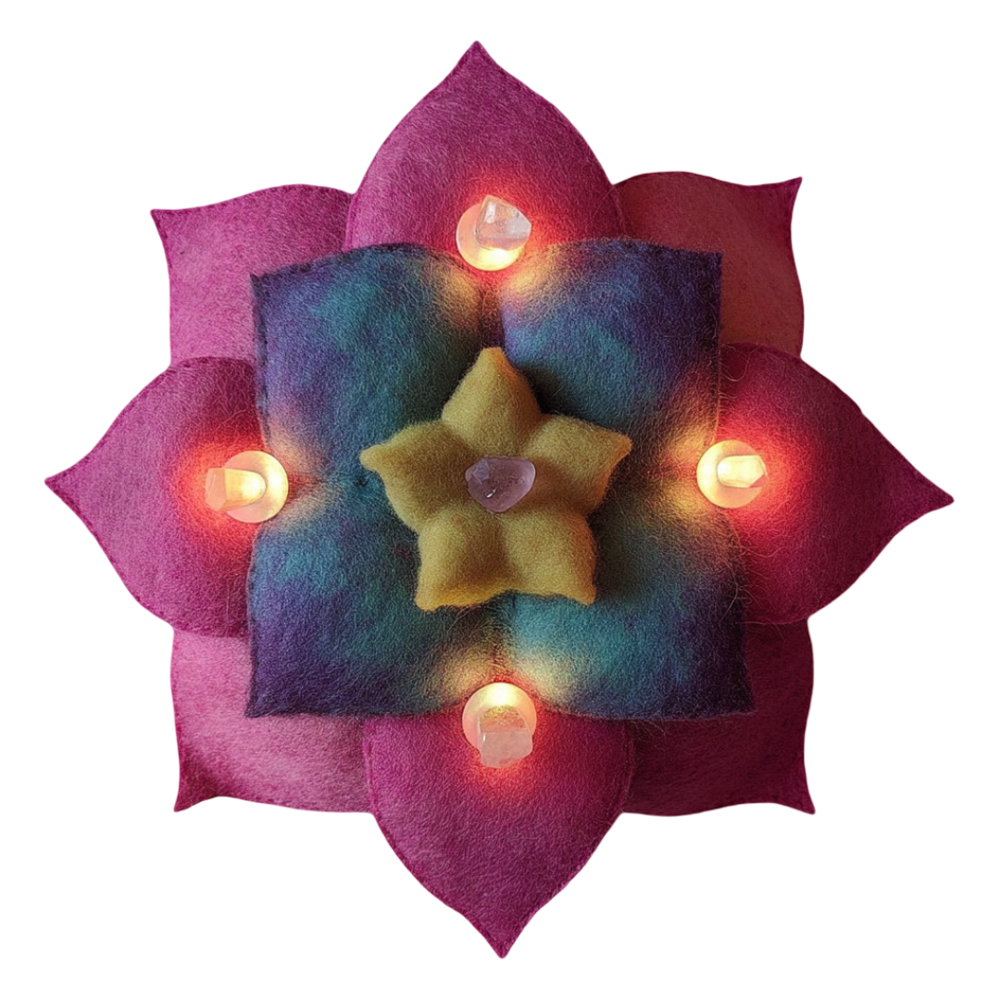

Dedication



noble
gentle
magical
graceful
open
nourishing pure luminous guiding clear
protecting caring blessing freeing healing
ancient loving sacred teaching true
nourishing pure luminous guiding clear
protecting caring blessing freeing healing
ancient loving sacred teaching true